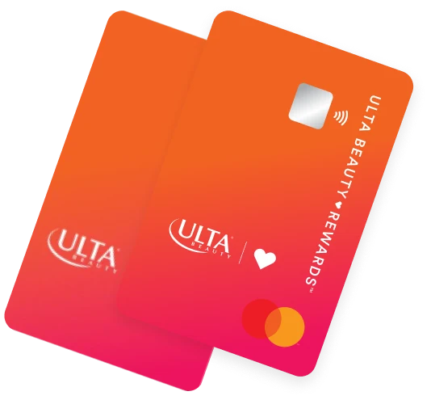
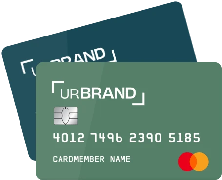
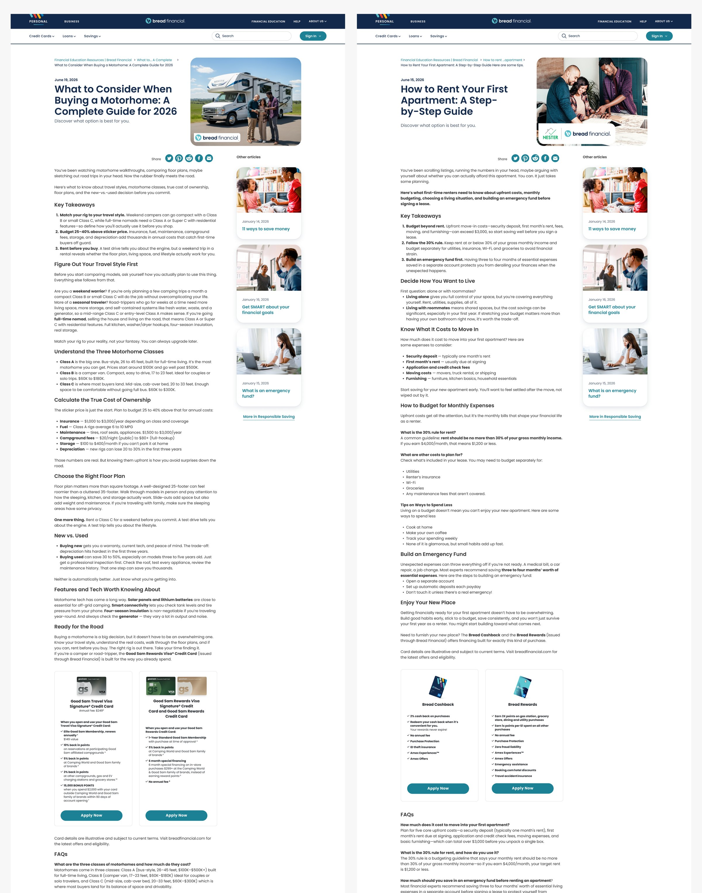

Bread Financial An AI shopping agent that scales across brands: it helps people find what they came for, and brings in the brand’s credit card only when it adds real value.


I.
Bread Financial is behind the branded credit cards of retailers like Ulta Beauty. Card offers usually reach shoppers as an interruption: a pop-up, a prompt at checkout. We designed an AI shopping assistant that works the other way around. It helps people shop first, and brings in the card when it answers a question they already have, like how to get more out of the thing in their bag.
II.
Once a shopper is thinking about rewards, the job changes: help them make the most of their points. The assistant answers in real numbers tied to what’s in the bag, and only suggests more when it gets them somewhere, like the next reward tier.
III.
AIO is the new SEO. AI doesn’t rank pages; it retrieves passages. So for financial-education articles, each written for one of Bread’s customer personas, every section was built to be easy to match, extract and cite: the answer first, terms defined rather than described, concrete numbers, and short self-contained chunks like key takeaways and FAQs. Answer-first content alone is about a third more likely to be cited by AI systems (Semrush, 2026).
